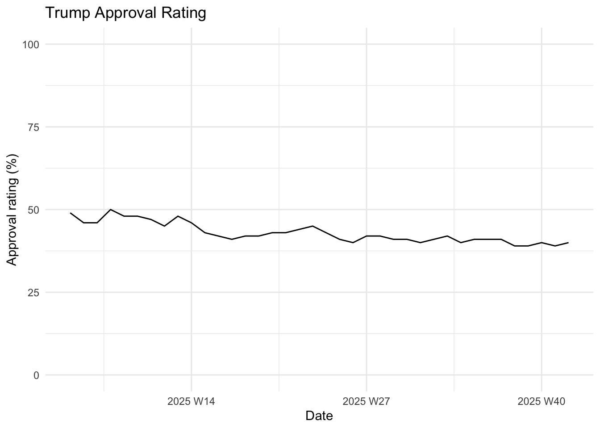
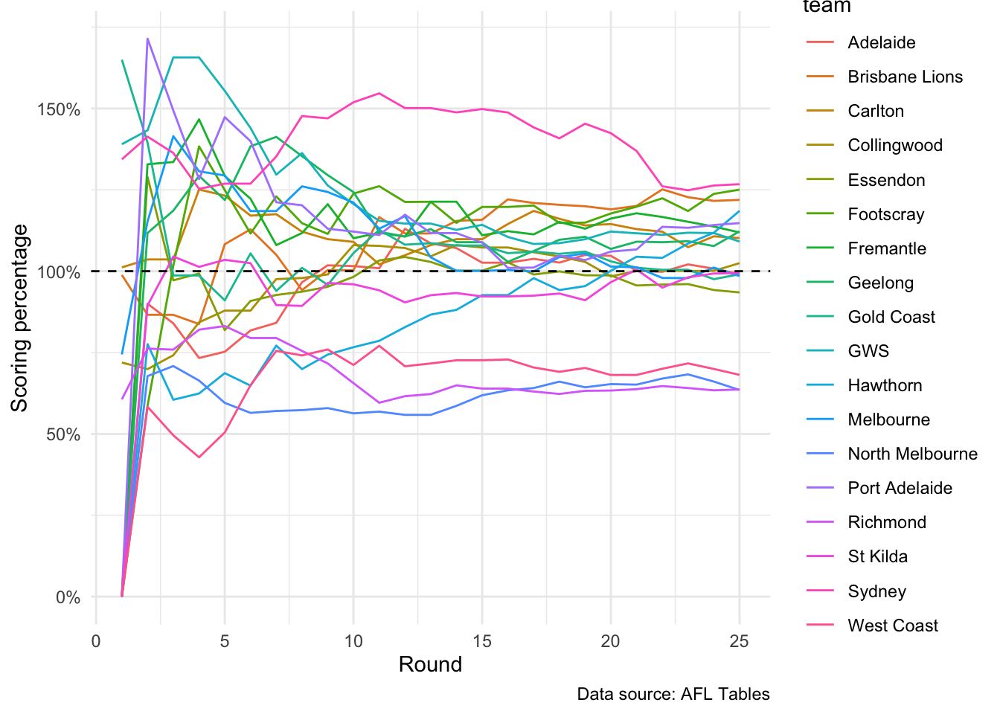

library(tidyverse)
library(tsibble)
library(ggtime)3 Introduction to Time Series in R
Before we dive in, you need to learn how to work with time series data in R. This chapter introduces you to the tsibble and ggtime R packages, which make working with and visualizing time series data easy.
3.1 tsibble objects
The easiest way to handle time series data in R is as a tsibble object. For example, here is a normal tibble of Mr Trump’s approval ratings across his current term in office:
trump_approval <- read_rds(here::here("data", "trump_approval.rds"))
trump_approval# A tibble: 36 × 2
date approve
<date> <dbl>
1 2025-09-29 40
2 2025-09-22 39
3 2025-09-15 39
4 2025-09-08 41
5 2025-09-02 41
6 2025-08-04 41
7 2025-08-25 41
8 2025-08-18 40
9 2025-08-11 42
10 2025-07-07 42
# ℹ 26 more rowsThese data are actually collected on a weekly basis by YouGov on behalf of The Economist. Although they have very good coverage, they do miss some weeks. It is difficult to see that these are weekly data and where our coverage is missing in this current format.
So, let’s convert it to a tsibble:
trump_approval_ts <- trump_approval |>
mutate(date = yearweek(date)) |>
as_tsibble()
trump_approval_ts# A tsibble: 36 x 2 [1W]
date approve
<week> <dbl>
1 2025 W05 49
2 2025 W06 46
3 2025 W07 46
4 2025 W08 50
5 2025 W09 48
6 2025 W10 48
7 2025 W11 47
8 2025 W12 45
9 2025 W13 48
10 2025 W14 46
# ℹ 26 more rowsMuch better! The tsibble handles the “timing” of it all much more nicely than a standard tibble. By converting the date column to weekly data using the yearweek() function and the data set itself into a tsibble object, I have ensured that any visualizations or models I build using these data will be treated appropriately.
3.1.1 Indexes
The column that records the time of your observations is referred to as the index. as_tibble() will often do a good job of guessing which column should be treated as your index, but you can specify it directly using the index argument. For examle:
trump_approval |>
mutate(date = yearweek(date)) |>
as_tibble(index = date)# A tibble: 36 × 2
date approve
<week> <dbl>
1 2025 W40 40
2 2025 W39 39
3 2025 W38 39
4 2025 W37 41
5 2025 W36 41
6 2025 W32 41
7 2025 W35 41
8 2025 W34 40
9 2025 W33 42
10 2025 W28 42
# ℹ 26 more rowstsibble objects can handle many different frequencies:
| Frequency | Function |
|---|---|
| Yearly | year() |
| Quarterly | yearquarter() |
| Monthly | yearmonth() |
| Weekly | yearweek() |
| Daily | See: as_date() |
| Sub-daily | See as_datetime() |
3.1.2 Keys
tsibble objects are also very good at handling multiple groups within your data. For example, you might have data on all teams in a league. It can be useful to group those data by team.
Below is data on each AFL team’s performance throughout the 2024 season. For example, we have data on their position in the ladder throughout the season (ladder_position), the cumulative number of points they have scored (score_for) and have had scored against them (score_against).
There were 25 rounds in the regular season (excluding finals). Those rounds are my index. I want to track each team’s performance across the season. Therefore, my key is the team.
afl_ladder <- read_rds(here::here("data", "afl_ladder.rds"))
afl_ladder_ts <- as_tsibble(afl_ladder, key = team, index = round_number)
afl_ladder_ts# A tsibble: 450 x 8 [1]
# Key: team [18]
season team round_number season_points score_for score_against percentage
<dbl> <chr> <int> <dbl> <dbl> <dbl> <dbl>
1 2024 Adelaide 1 0 0 0 0
2 2024 Adelaide 2 0 54 60 0.9
3 2024 Adelaide 3 0 131 156 0.840
4 2024 Adelaide 4 0 165 225 0.733
5 2024 Adelaide 5 0 228 303 0.752
6 2024 Adelaide 6 4 328 401 0.818
7 2024 Adelaide 7 4 403 479 0.841
8 2024 Adelaide 8 8 541 560 0.966
9 2024 Adelaide 9 12 619 608 1.02
10 2024 Adelaide 10 14 709 698 1.02
# ℹ 440 more rows
# ℹ 1 more variable: ladder_position <int>Notice that the tsibble object prints my key above the the data set. It recognizes that there are 18 different groups (teams) in my key. I now have 18 different time series (each team’s performance across the season) stored in one convenient data set. I can look at overall trends and compare the 18 different teams’ performance easily.
3.1.3 Working with tsibble objects
On a tsibble, we can use all of the functions that you can use on a normal tibble or data.frame object. They are set up with the tidyverse in mind, so functions in that family work seamlessly.
For example, I can filter my data set of Mr Trump’s approval rating to look only at his approval in weeks five to 10 of his current term1:
filter(trump_approval_ts, date <= yearweek("2025 W10"))# A tsibble: 6 x 2 [1W]
date approve
<week> <dbl>
1 2025 W05 49
2 2025 W06 46
3 2025 W07 46
4 2025 W08 50
5 2025 W09 48
6 2025 W10 48I can also quickly calculate Mr Trump’s average approval rating across his term in office:
summarise(trump_approval_ts, avg_approve = mean(approve))# A tsibble: 36 x 2 [1W]
date avg_approve
<week> <dbl>
1 2025 W05 49
2 2025 W06 46
3 2025 W07 46
4 2025 W08 50
5 2025 W09 48
6 2025 W10 48
7 2025 W11 47
8 2025 W12 45
9 2025 W13 48
10 2025 W14 46
# ℹ 26 more rows3.2 Plotting your time series data
Patterns in our data are often most easily detected when we visualize them. The simplest plot to start with is a time series plot. The ggtime R package provides a series of functions that make visualizing time series data simple.
For example, Figure 4.1 shows Mr Trump’s approval ratings across his current term.
autoplot(trump_approval_ts) +
theme_minimal() +
labs(x = "Date",
y = "Approval rating (%)",
caption = "Data source: The Economist/YouGov") +
scale_y_continuous(limits = c(0, 100))

We can see that Mr Trump’s popularity is declining. In fact, he has not yet enjoyed more than 50 percent of the US voting public’s approval.
3.2.1 Plotting grouped data
We can also plot grouped data to more easily make comparisons between them. For example, Figure 3.2 plots each of the 18 AFL teams’ score percentages across the 2024 season. Some teams, including long-suffering North Melbourne, never managed to score more points than they conceded. Other teams, including the Sydney Swans, managed to never dip below 100 percent.
autoplot(afl_ladder_ts, percentage) +
geom_hline(yintercept = 1, linetype = "dashed") +
theme_minimal() +
labs(x = "Round",
y = "Scoring percentage",
caption = "Data source: AFL Tables") +
scale_y_continuous(labels = scales::percent)

The poll only started after his fifth week in office.↩︎